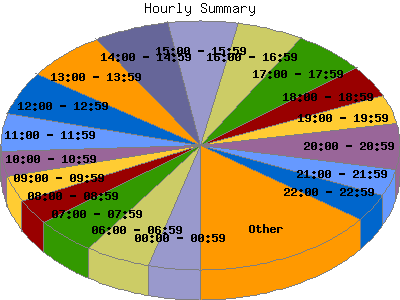

Report generated by Analog 5.91beta1 and Report Magic 2.21
|
Web Server Statistics for "Harish Narayanan (hnarayan) - October 2004" Report generated by Analog 5.91beta1 and Report Magic 2.21 |
The Hourly Summary identifies the level of activity broken down by each hour. Remember that one page hit can result in several server requests as the images for each page are loaded. This summary also compares the level of activity during working hours and after hours as a total for the report time frame.


| Hour | Number of requests | Number of bytes transferred | Percentage of the bytes | Percentage of the requests | |
|---|---|---|---|---|---|
| 1. | 00:00 - 00:59 | 233 | 5.646 MB | 3.62% | 4.13% |
| 2. | 01:00 - 01:59 | 141 | 2.507 MB | 1.61% | 2.50% |
| 3. | 02:00 - 02:59 | 164 | 5.922 MB | 3.80% | 2.91% |
| 4. | 03:00 - 03:59 | 79 | 2.274 MB | 1.46% | 1.40% |
| 5. | 04:00 - 04:59 | 136 | 3.890 MB | 2.50% | 2.41% |
| 6. | 05:00 - 05:59 | 152 | 4.177 MB | 2.68% | 2.69% |
| 7. | 06:00 - 06:59 | 296 | 10.717 MB | 6.88% | 5.25% |
| 8. | 07:00 - 07:59 | 279 | 7.313 MB | 4.69% | 4.95% |
| 9. | 08:00 - 08:59 | 183 | 3.368 MB | 2.16% | 3.24% |
| 10. | 09:00 - 09:59 | 189 | 4.296 MB | 2.76% | 3.35% |
| 11. | 10:00 - 10:59 | 186 | 6.144 MB | 3.94% | 3.30% |
| 12. | 11:00 - 11:59 | 272 | 3.392 MB | 2.18% | 4.82% |
| 13. | 12:00 - 12:59 | 315 | 6.945 MB | 4.46% | 5.58% |
| 14. | 13:00 - 13:59 | 373 | 10.754 MB | 6.90% | 6.61% |
| 15. | 14:00 - 14:59 | 347 | 10.558 MB | 6.78% | 6.15% |
| 16. | 15:00 - 15:59 | 320 | 8.704 MB | 5.58% | 5.67% |
| 17. | 16:00 - 16:59 | 305 | 8.648 MB | 5.55% | 5.41% |
| 18. | 17:00 - 17:59 | 336 | 6.641 MB | 4.26% | 5.96% |
| 19. | 18:00 - 18:59 | 233 | 10.343 MB | 6.64% | 4.13% |
| 20. | 19:00 - 19:59 | 207 | 6.314 MB | 4.05% | 3.67% |
| 21. | 20:00 - 20:59 | 337 | 10.347 MB | 6.64% | 5.97% |
| 22. | 21:00 - 21:59 | 195 | 4.967 MB | 3.19% | 3.46% |
| 23. | 22:00 - 22:59 | 199 | 4.963 MB | 3.19% | 3.53% |
| 24. | 23:00 - 23:59 | 164 | 7.010 MB | 4.50% | 2.91% |
| Work Hours (8:00am-4:59pm) | 2,490 | 62.809 MB | 40.30% | 44.14% | |
| After Hours (5:00pm-7:59am) | 3,151 | 93.030 MB | 59.70% | 55.86% | |
This report was generated on November 16, 2004 14:01.
Report time frame October 1, 2004 00:09 to October 31, 2004 22:18.
| Web statistics report produced by: | |
 Analog 5.91beta1 Analog 5.91beta1 |  Report Magic 2.21 Report Magic 2.21 |